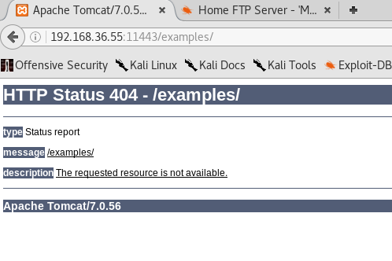

root@kali:~# ftp 192.168.36.55
Connected to 192.168.36.55.
220-Wellcome to Home Ftp Server!
220 Server ready.
Name (192.168.36.55:root): ftp
331 Password required for ftp.
Password:
230 User Anonymous logged in.
Remote system type is UNIX.
Using binary mode to transfer files.
ftp> dir
200 Port command successful.
150 Opening data connection for directory list.
drw-rw-rw- 1 ftp ftp 0 Dec 28 2015 .
drw-rw-rw- 1 ftp ftp 0 Dec 28 2015 ..
226 File sent ok
ftp> cd ..
501 CWD failed. Invalid directory name syntax
ftp> cd ftp
501 CWD failed. Directory does not exist
ftp> ls
200 Port command successful.
150 Opening data connection for directory list.
drw-rw-rw- 1 ftp ftp 0 Dec 28 2015 .
drw-rw-rw- 1 ftp ftp 0 Dec 28 2015 ..
226 File sent ok
ftp>



xampp-dav-unsecure:$apr1$6O9scpDQ$JGw2Tjz0jkrqfKh5hhiqD1
WEB-DAV für den gemeinsamen REMOTE-Zugriff
auf WWW-Dokumente über den Apache2.
Die Module mod_dav.so und mod_dav_fs.so auskommentieren
URL: http://localhost/webdav/
User: wampp Password: xampp
E-Mail-Adresse bei Dreamweaver angeben.
Lokales Directory: /xampp/webdav/
### XAMPP Default Passwords ###
1) MySQL (phpMyAdmin):
User: root
Password:
(means no password!)
2) FileZilla FTP:
[ You have to create a new user on the FileZilla Interface ]
3) Mercury (not in the USB & lite version):
Postmaster: Postmaster (postmaster@localhost)
Administrator: Admin (admin@localhost)
User: newuser
Password: wampp
4) WEBDAV:
User: xampp-dav-unsecure
Password: ppmax2011
Attention: WEBDAV is not active since XAMPP Version 1.7.4.
For activation please comment out the httpd-dav.conf and
following modules in the httpd.conf
LoadModule dav_module modules/mod_dav.so
LoadModule dav_fs_module modules/mod_dav_fs.so
Please do not forget ro refresh the WEBDAV authentification (users and passwords).